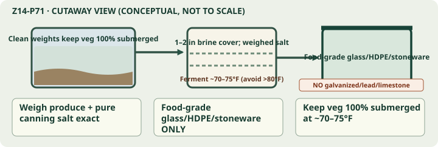

Z14-P71 · Food production and preservation · New manuscript
Control salt weight, vessel safety, temperature, and submersion in lacto-fermentation
Cultivate safe acid-producing lactic bacteria in sauerkraut and brined pickles while excluding harmful spoilage microbes and heavy-metal leaching.
When it applies · Home lacto-fermentation of shredded cabbage (sauerkraut) and whole brined cucumbers.
Equipment · Clean food-grade glass/ceramic crock or HDPE food bucket (never glazed lead pottery, aluminum, copper, or galvanized metal), kitchen scale, pure canning salt, and clean submersion weights.

Actions
- Weigh cabbage/produce and pure canning/pickling salt accurately per a tested USDA/NCHFP fermentation recipe—exact salt concentration suppresses bad bacteria while letting beneficial Lactobacillus produce preserving lactic acid cleanly.[P13]
- Use ONLY clean food-grade glass, food-grade plastic (HDPE #2), or lead-free stoneware crocks (NEVER galvanized metal, copper, aluminum, chipped ceramic, or garbage bags—acidic brine dissolves toxic zinc/lead/plasticizers straight into food!).[P13, W06]
- Keep ALL vegetables continuously SUBMERGED 1 to 2 inches beneath liquid brine using clean food-grade weights (glass weights or heavy food-grade brine-filled freezer bags—never limestone rocks that dissolve in acid!), fermenting at controlled NCHFP temperatures (roughly 70–75°F for 3–4 weeks for sauerkraut; avoid hot >80°F rooms that spoil ferments).[P13]
Failure recognition · Fermenting sauerkraut in a galvanized metal tub weighted down with a backyard limestone rock in an 88°F garage.[P13]
Verify · Confirm food-grade non-reactive vessel, exact weighed canning salt, vegetables fully submerged under brine, and controlled 68–75°F fermentation temp.[P13]
Stop or change course · Hot >80°F fermentation rooms, reactive metal/leaded vessels, or dry exposed vegetables rising above brine require discarding failed batches cleanly.[P13]
Evidence and editorial notes
- P13 · NCHFP · Fermenting and Pickling Foods (current web edition)
- Section: Fermenting and Pickling > Salt Ratios, Vinegar Acidity, and Submerged Brine · Conditions: Tested lacto-fermented vegetables (sauerkraut/pickles) and vinegar quick-pickles
Support: Use standardized 5% acidity vinegar for tested pickle recipes and exact weighed/measured canning-and-pickling salt (not iodized/anti-caking salt) plus clean food-grade crocks and submerged weights for lacto-fermentation at controlled temperatures.
Limitations: Altering salt/vinegar ratios or allowing surface mold/scum in warm rooms causes spoilage and unsafe pH drift. · Conflicting evidence: None; separates tested fermentation/pickling from improvised brining.
Editorial note: Grounds fermentation, pickling, and acidity verification cards. · Specialist reviewer: Food microbiology and Extension preservation
Primary source · checked 2026-11-24 - W06 · CDC · How to Create an Emergency Water Supply (current web edition)
- Section: How to store emergency water; Safe storage containers · Conditions: Potable water intended for emergency storage
Support: Prefer sealed commercial water or clean food-grade tight-closing containers. Avoid containers that held toxic chemicals.
Limitations: Container shelf durability and rotation depend on plastic/material type and storage heat. · Conflicting evidence: None; reinforces strict raw-vs-clean segregation.
Editorial note: Used to enforce labeling and dedicated raw/potable vessel separation. · Specialist reviewer: Drinking-water safety and public health
Primary source · checked 2026-11-24
Source lineage · NCHFP Fermenting and Pickling Foods; new manuscript · Classification · New manuscript.